In this chapter you learn to make your findings visible. The methods chapters that follow (univariate and bivariate analysis, latent structures, explanatory models) make extensive use of what you learn here. You lay the foundation for visualising distributions, group comparisons and relationships.
Note
Research journal: Where are you in your mini study? Your scales are ready. Before you start calculating, you learn visualisation, because every analysis begins with “look first, then test”. A histogram of the Islamophobia scale tells you more about whether the construct is distributed as expected than any table from Chapter 5. Work through this chapter before you test hypotheses in Chapter 7.
6.1 What this chapter is about
A good plot answers a research question in two seconds. A good paragraph of text needs two minutes. And a table? Nobody reads it unless they have to. When your analysis is finished, only half of your work is done. The other half is communicating it so that readers understand what you have found.
In SPSS you build what you need by clicking through the Graphs menu: bars, lines, points. Each chart type has its own sequence of clicks. If you want something more complex, such as a box plot with facets by education, it quickly becomes tedious. And the result looks as if it had been designed in 1998.
ggplot2 works differently. Imagine you are describing over the phone a graphic that a designer will make for you. You would have to tell them exactly three things:
Which data do you want to show? Which dataset?
What goes where? Which variable goes on the x-axis, which on the y-axis, which determines the colour, which the grouping?
What should the data points look like? Bars? Points? A line? A box plot?
That is all you need. From these three pieces of information, ggplot2 builds the plot automatically. The official names of the three components are data, aesthetic mapping and layer (geom). Hadley Wickham derived the system from a 2005 book in which Leland Wilkinson described statistical graphics systematically as a “grammar”, hence the name grammar of graphics. Just as you can build any sentence from nouns, verbs and adjectives, you can build any graphic from these three components.
This has a big practical advantage: once you have understood how one chart is built, you understand all of them. If you can make a box plot, the step to a histogram or a scatter plot is just a different geom_*(); the basic structure stays the same.
NoteBackground: Who invented the grammar?
In The Grammar of Graphics (2005), Leland Wilkinson proposed building every statistical graphic from a small number of orthogonal components. Hadley Wickham implemented this in R in 2007 as ggplot (later ggplot2). Today the grammar is also standard in Python (plotnine), JavaScript (Observable Plot) and many commercial tools. Once you have learned in one system which layers a graphic is made of, you can read graphics in all of them.
This chapter takes you through these three steps and the most important geom variants. You learn which plot suits which data type, how to split the data into subgroups with facets, and how to adjust colours, themes and labels. The more advanced visualisation topics (coefficient plots, combining several plots, saving in publication quality) follow in Chapter 9 at the end of the methods chapters, where you present concrete model results.
What you will be able to do after this chapter
Explain the grammar of graphics approach of ggplot2.
Visualise frequencies, distributions and relationships with the appropriate geom_*() layers.
Split the data into subgroups with facet_wrap() and facet_grid().
Adjust colours, themes and labels, including readable axis labels with to_label().
Explain the role of the book-wide theme theme_rworkshop().
6.2 The grammar of graphics
As explained in the introduction, every ggplot2 plot consists of exactly three components: data, aesthetic mapping and layers. In code it looks like this:
allbus|>ggplot(aes(x =..., y =...))+# data + aesthetic mappinggeom_...(...)# layer
The function aes() (short for aesthetics) does the translation: “take this column and map it to this visual property”, for example education variable → x-axis, scale score → y-axis, sex → colour. Then the geom_*() functions add a visible layer on top: bars, points, boxes, whatever you need.
Here is what this looks like for four respondents. The chunk takes the first four rows in which educ_cat, islamophobia and sex have a value and draws them as points:
# A tibble: 4 × 4
respid educ_cat islamophobia sex
<dbl> <fct> <dbl> <fct>
1 1 medium 3.33 MALE
2 5 high 4 FEMALE
3 6 high 3.83 FEMALE
4 9 high 1.5 MALE
four|>ggplot(aes(x =educ_cat, y =islamophobia, color =sex))+geom_point(size =3)
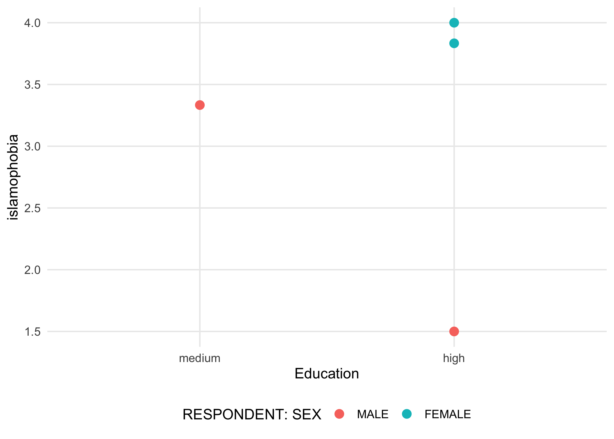
aes() sets which tower determines which property of the plot, and geom_point() draws each row as a point (Figure 6.1). The x-axis shows only medium and high, because none of the four rows has low education.
Figure 6.1: aes() assigns the towers of four to the x-axis, the y-axis and the colour. geom_point() turns each row into a point; the numbers next to the points are the respid values.
Notice that the layers are joined with + instead of the pipe |>. The reason is historical: ggplot2 is older than the native pipe and has kept its own operator. You can remember it like this: everything before ggplot(...) is joined with |>, everything after ggplot(...) with +.
Warning
Caution: + vs. |>. If you accidentally put |> between ggplot(...) and a geom_*() layer, you get a cryptic error message such as:
Error in geom_bar(): could not find function "geom_bar"
or
Error: `mapping` must be created by `aes()`
The fix is a + instead of |> between the ggplot2 layers; nothing else changes.
6.2.1 First plot: frequency distribution of an item
Question: How are the answers to the item mm03 (“Presence of Muslims leads to conflicts”) distributed?
allbus|>filter(!is.na(mm03))|>ggplot(aes(x =mm03, weight =wghtpew))+geom_bar(fill ="#2563eb")+labs(x ="mm03: Presence of Muslims leads to conflicts", y ="Count (weighted)", caption ="ALLBUS 2023, weighted with wghtpew")+scale_x_continuous(breaks =1:7)
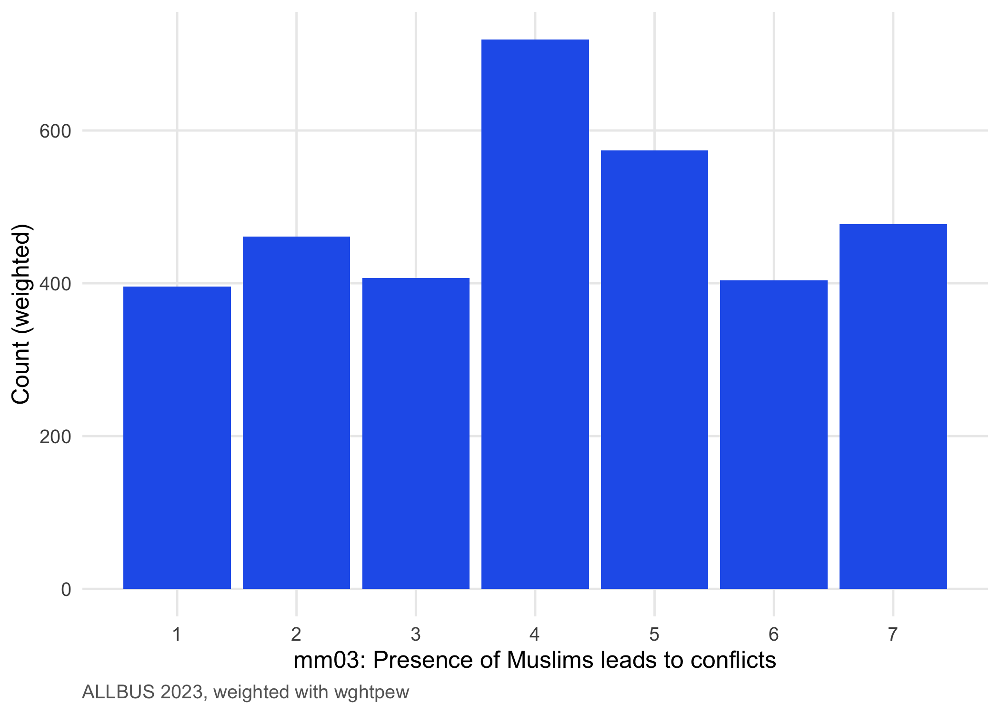
Interpretation. The scale runs from 1 (COMPLETELY DISAGREE) to 7 (COMPLETELY AGREE). The distribution shows in which direction the respondents lean.
Warning
Caution: weight = (ggplot2) vs. weights = (mariposa). Both apply weights, but they are spelled differently. ggplot2 uses weight (singular, without s) as an aesthetic inside aes(); mariposa functions such as frequency() or t_test() use weights (plural, with s) as a function argument. If you write both in the same script, you will occasionally mistype one. An unweighted result produces no error message, so the mistake easily goes unnoticed.
6.2.2 Second plot: comparing subgroups
Question: How does Islamophobia differ by level of education?
allbus|>filter(!is.na(islamophobia), !is.na(educ_cat))|>ggplot(aes(x =educ_cat, y =islamophobia, fill =educ_cat))+geom_boxplot(alpha =0.7)+labs(x ="Education group", y ="Islamophobia (1–7)", caption ="ALLBUS 2023")+scale_fill_brewer(palette ="Blues")+theme(legend.position ="none")
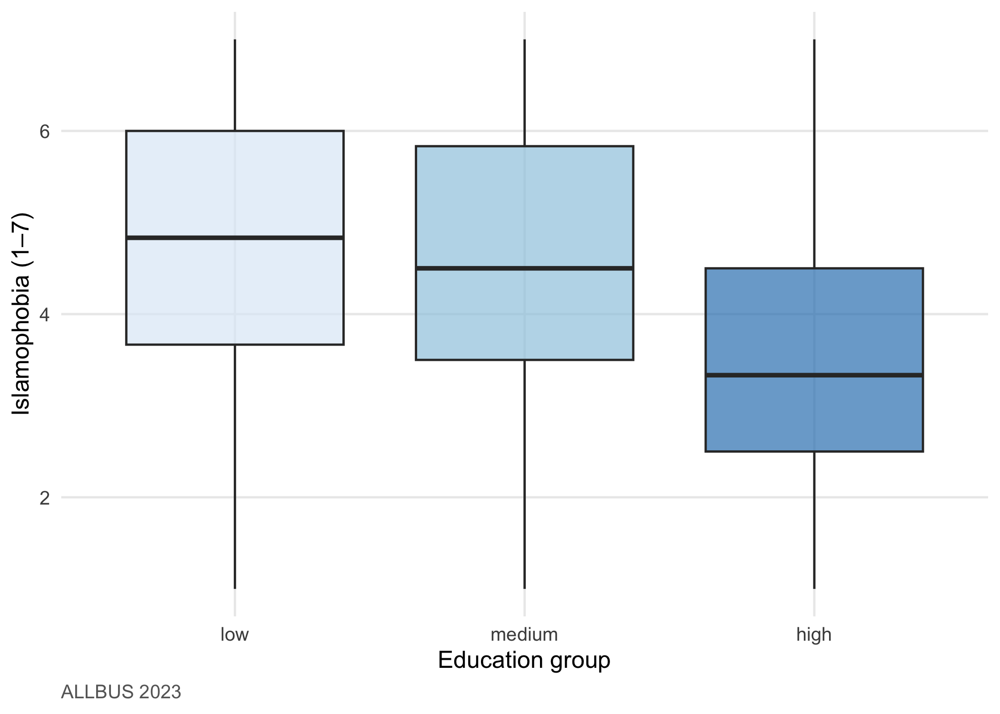
Both plots follow the same three-step structure. The next section goes through it in detail.
6.3 How a plot is built
6.3.1 Creating the plot object with ggplot()
You create the plot object with ggplot(). The first argument is the dataset:
g<-allbus|>ggplot()
On its own, g is an “empty” plot object: it knows nothing yet about axes or content.
6.3.2 Aesthetic mapping with aes()
With aes() you map columns of the dataset to visual properties of the plot. The most important properties are:
Argument
Purpose
x =, y =
axes
weight =
survey weighting
fill =
fill colour (areas: bars, boxes)
colour =
line or point colour
shape =
point shape
linetype =
line style
size =, alpha =
size / transparency
group =
invisible grouping
If aes() is inside ggplot(), the mapping applies to all layers of the plot. You can also set mappings for a single layer; then they apply only there.
Whether a setting is inside or outside aes() makes a big difference. This is the beginner’s trap in ggplot2. The rule is simple, but the two cases have opposite consequences:
Inside aes(): a data column is mapped to a visual property. The colour then varies with the values of the variable, and ggplot2 adds a legend automatically.
Outside aes(): a constant property for all points or bars. No legend, everything in the same colour.
ggplot(allbus, aes(x =age, fill =sex))+geom_bar()# one bar per age, stacked by sexggplot(allbus, aes(x =age))+geom_bar(fill ="steelblue")# all bars the same blue
In the first call, the tower sex determines the colour of each segment of a bar; in the second, the single value "steelblue" applies to all bars (Figure 6.2).
Figure 6.2: At the top, the tower sex determines the fill colour: each bar is stacked by sex, and the legend shows the colours. At the bottom, the single value "steelblue" applies to all bars, and there is no legend. The bars for ages 18 to 24 are shown.
Stop and think. What does R draw if the constant is inside aes(): ggplot(allbus, aes(x = age, fill = "steelblue")) + geom_bar()? What colour are the bars, and is there a legend?
TipAnswer
ggplot(allbus, aes(x =age, fill ="steelblue"))+geom_bar()
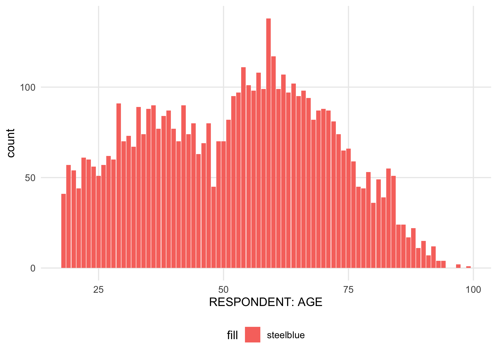
Inside aes(), ggplot2 treats "steelblue" like a tower that holds the same value in every row. That is a single level, and it gets the first colour of the default palette, a salmon red (#F8766D). The legend has exactly one entry, “steelblue”. A legend like this is a clear sign that a constant is inside aes().
For colours, ggplot2 distinguishes two aesthetics, fill and color:
fill is the fill colour, for areas: bars, boxes, polygons, densities.
color is the stroke colour, for lines, points and outlines.
If you want to colour a bar and write color = sex, you see only thin outlines around an otherwise empty area. For points and lines color is right, for bars fill. Some geoms (e.g. geom_boxplot()) need both: fill for the box, color for the outline.
g<-allbus|>filter(!is.na(islamophobia), !is.na(eastwest))|>ggplot(aes(x =eastwest, y =islamophobia, weight =wghtpew, fill =eastwest))
g is now a plot object with axis mappings, but you do not see anything yet because there is no layer.
6.3.3 Adding layers with geom_jitter(), geom_boxplot() and geom_violin()
You add layers with +. The layer functions all start with the prefix geom_.
A point plot with geom_jitter():
allbus|>filter(!is.na(islamophobia), !is.na(populism))|>ggplot(aes(x =populism, y =islamophobia))+geom_jitter(width =0.08, height =0.08, alpha =0.2, color ="#1f77b4")+labs(x ="Populism (1–5, reverse-coded)", y ="Islamophobia (1–7)", caption ="ALLBUS 2023")
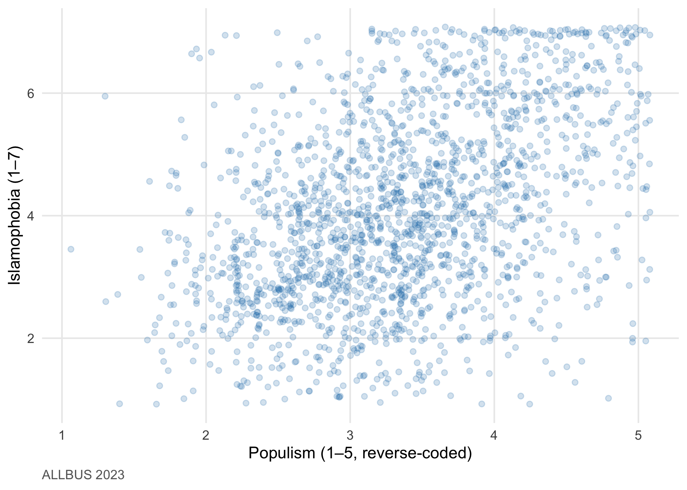
geom_jitter() moves overlapping points apart slightly. With two discrete axes (scales with few values) this is essential; otherwise all respondents with the same values look like one point.
The box plot and the violin plot build on the same base, g_base:
g_base<-allbus|>filter(!is.na(islamophobia), !is.na(educ_cat))|>ggplot(aes(x =educ_cat, y =islamophobia, fill =educ_cat))g_base+geom_boxplot()
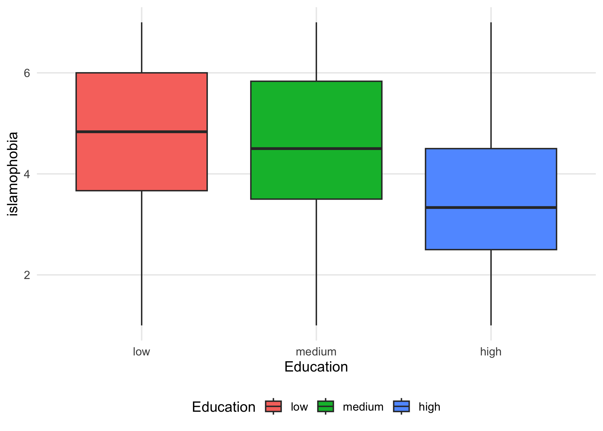
Box plots show the median (line in the box), the middle 50% (box) and the whiskers (1.5 × IQR). Violin plots show the density instead:
g_base+geom_violin()
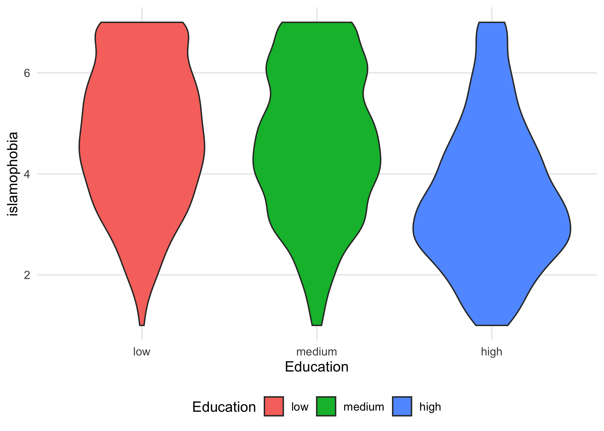
A common trick is to combine both layers, with the violin as the background and a thin box plot on top:
g_base+geom_violin(alpha =0.4)+geom_boxplot(width =0.1, fill ="white")+theme(legend.position ="none")
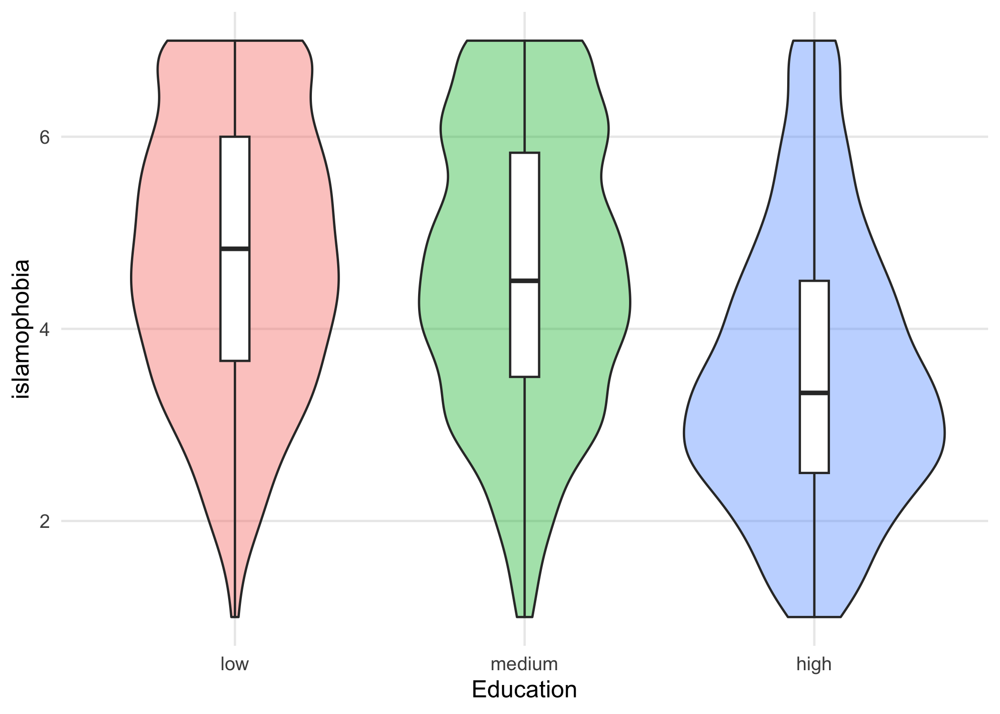
g_base contains the data and the mapping, but no layer yet. Up to ggplot(), the baseplate passes through |>; after that, each + adds a layer, and whatever comes later lies on top (Figure 6.3). theme() is also added with +, but it does not create a layer: it changes the appearance and here hides the legend.
Figure 6.3: Up to ggplot(), the baseplate passes through |>; the result g_base has axes but no layer. With +, violins and boxes are added as separate layers, and the boxes lie on top.
6.4 Geoms for different data types
Which geom_* makes sense depends on the data type of the variables. A quick overview:
Data type
Recommended geoms
One categorical variable
geom_bar()
One continuous variable
geom_histogram(), geom_density()
Two categorical variables
geom_bar(position = "dodge") or position = "fill"
One categorical + one continuous
geom_boxplot(), geom_violin()
Two continuous variables
geom_point(), geom_jitter(), geom_smooth()
Time series
geom_line()
6.4.1 One categorical variable with geom_bar() and after_stat()
A classic bar chart with geom_bar():
allbus|>filter(!is.na(educ_cat))|>ggplot(aes(x =educ_cat, weight =wghtpew))+geom_bar(fill ="steelblue")+labs(x ="Education group", y ="Count (weighted)")
For relative frequencies, modern ggplot2 (version 3.4 and later) uses after_stat() instead of the old ..count../..prop.. syntax:
allbus|>filter(!is.na(educ_cat))|>ggplot(aes(x =educ_cat, weight =wghtpew))+geom_bar(aes(y =after_stat(prop), group =1), fill ="steelblue")+scale_y_continuous(labels =scales::percent)+labs(x ="Education group", y ="Share")
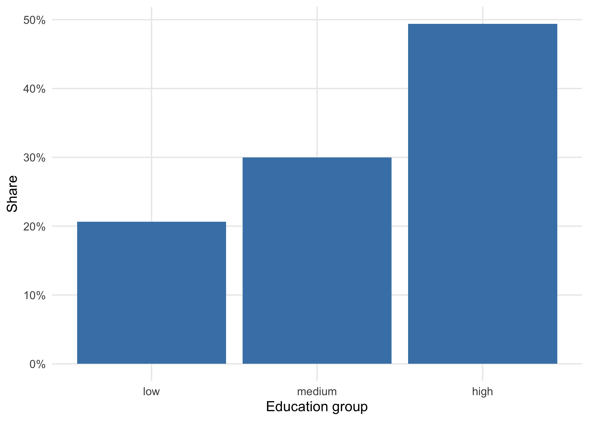
Before geom_bar() draws anything, it counts: for each level of educ_cat it sums the weights from wghtpew into count (1049.6, 1524.7 and 2510.5) and calculates the share prop from these (0.206, 0.300 and 0.494). Without further instructions, count goes on the y-axis, as in the previous chunk; after_stat(prop) takes the shares instead (Figure 6.4). group = 1 puts all levels into one group; without it, ggplot2 calculates the share of each level relative to itself, and every bar would be 100% high.
Figure 6.4: geom_bar() sums the weights for each level of educ_cat into count and calculates the share prop from these; after_stat(prop) puts the shares on the y-axis. On the left are the first two respondents of each level.
With fill = as a second grouping variable you get stacked bars, and with position = "dodge" bars side by side:
allbus|>filter(!is.na(educ_cat), !is.na(sex))|>ggplot(aes(x =educ_cat, weight =wghtpew, fill =sex))+geom_bar(position ="dodge")+labs(x ="Education group", y ="Count (weighted)", fill ="Sex")
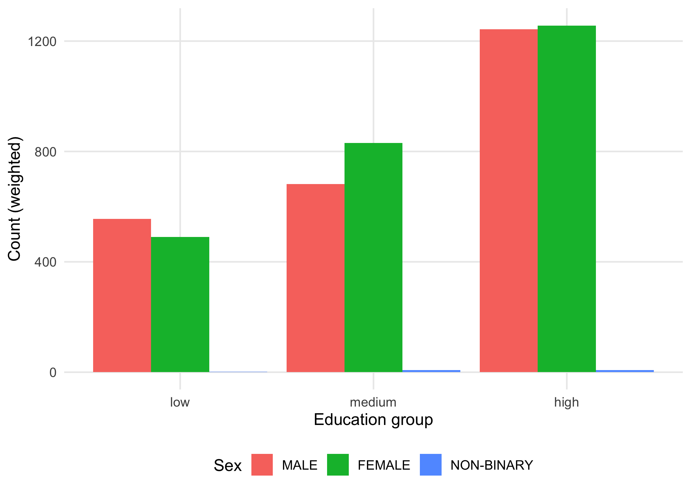
6.4.2 One continuous variable with geom_histogram() and geom_density()
A histogram with geom_histogram(). The most important setting is binwidth:
allbus|>filter(!is.na(islamophobia))|>ggplot(aes(x =islamophobia, weight =wghtpew))+geom_histogram(binwidth =0.5, fill ="steelblue", color ="white")+labs(x ="Islamophobia (1–7)", y ="Count (weighted)")
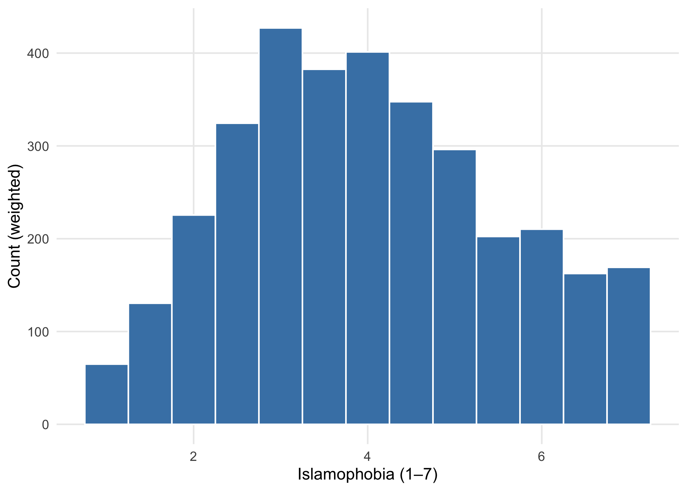
With geom_density() you get a smoothed density estimate instead:
allbus|>filter(!is.na(islamophobia), !is.na(sex))|>ggplot(aes(x =islamophobia, fill =sex))+geom_density(alpha =0.4)+labs(x ="Islamophobia (1–7)", y ="Density", fill ="Sex")
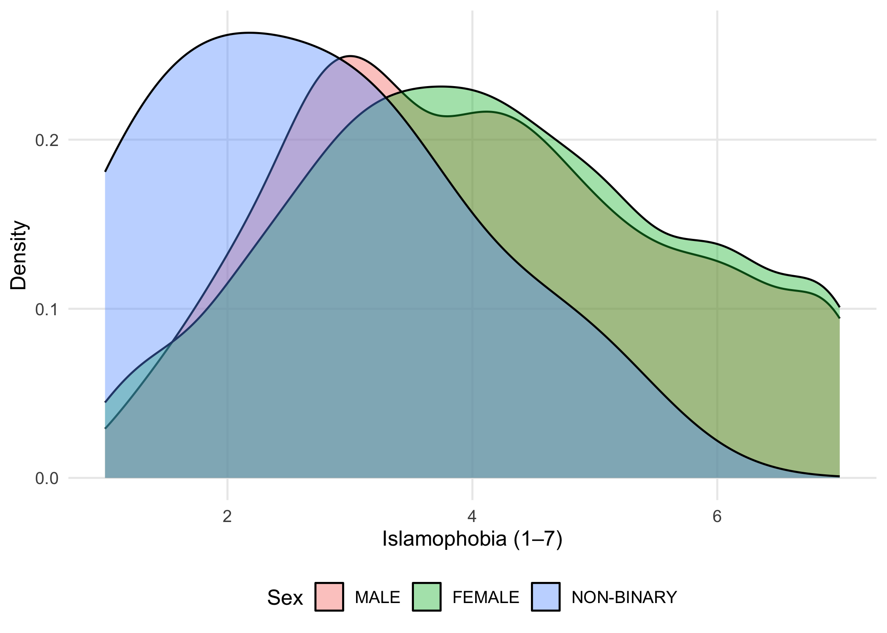
6.4.3 Two continuous variables with geom_smooth()
The classic is a scatter plot with a regression line:
allbus|>filter(!is.na(islamophobia), !is.na(populism), !is.na(sex))|>ggplot(aes(x =populism, y =islamophobia, color =sex))+geom_jitter(alpha =0.2, width =0.05, height =0.05)+geom_smooth(method ="lm", se =TRUE)+labs(x ="Populism", y ="Islamophobia", color ="Sex", caption ="ALLBUS 2023")
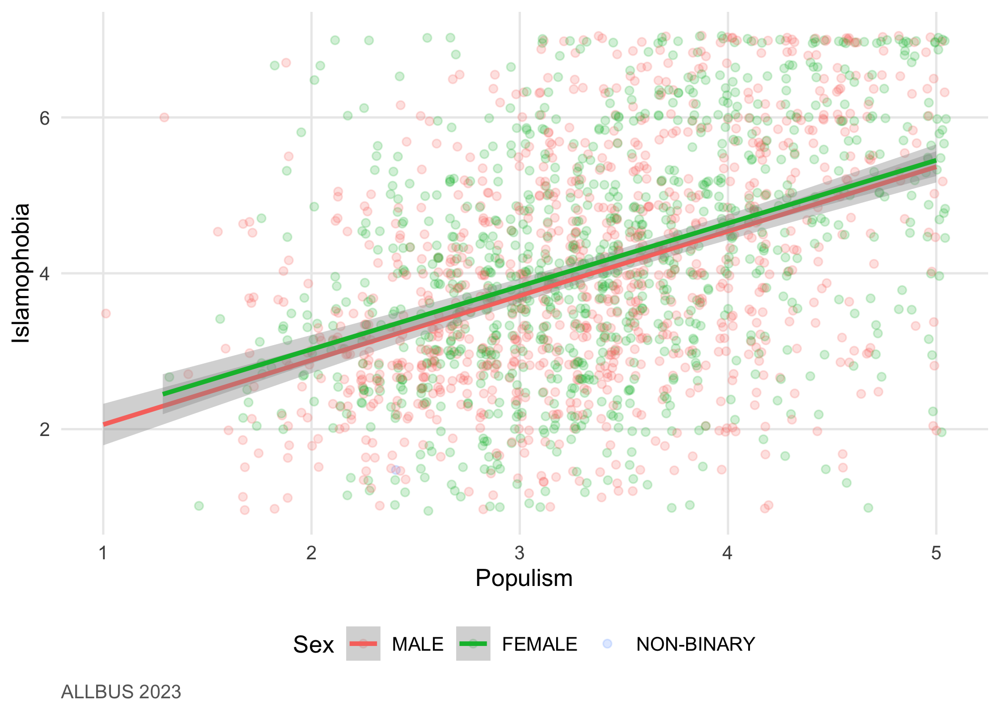
geom_smooth(method = "lm") draws a linear regression line for each group. For non-linear trends you use method = "loess". You learn what a regression line is mathematically in Section 9.4; here it only serves as a visual aid for the trend.
6.5 Splitting data into subgroups with facets: facet_wrap() and facet_grid()
Imagine you want to show the relationship between populism and Islamophobia, but separately for each education group. You could overlay the three groups in a single plot in three different colours. With two groups this still works; with three or more it becomes chaotic: points overlap, trend lines cross, and the plot becomes hard to read.
The solution is facets: ggplot2 turns one plot into several, one per subgroup, arranged side by side with identical axes. This lets you compare the subgroups directly without them overlapping. It is one of the most powerful features of ggplot2, and it is extremely useful in social research, because almost every question there is worth looking at group by group.
There are two variants: facet_wrap() for one grouping variable, facet_grid() for two. Both are built the same way: you give the grouping variable as a formula with ~.
allbus|>filter(!is.na(islamophobia), !is.na(populism), !is.na(educ_cat))|>ggplot(aes(x =populism, y =islamophobia))+geom_jitter(alpha =0.2, color ="#1f77b4")+geom_smooth(method ="lm", color ="black")+facet_wrap(~educ_cat)+labs(x ="Populism", y ="Islamophobia")
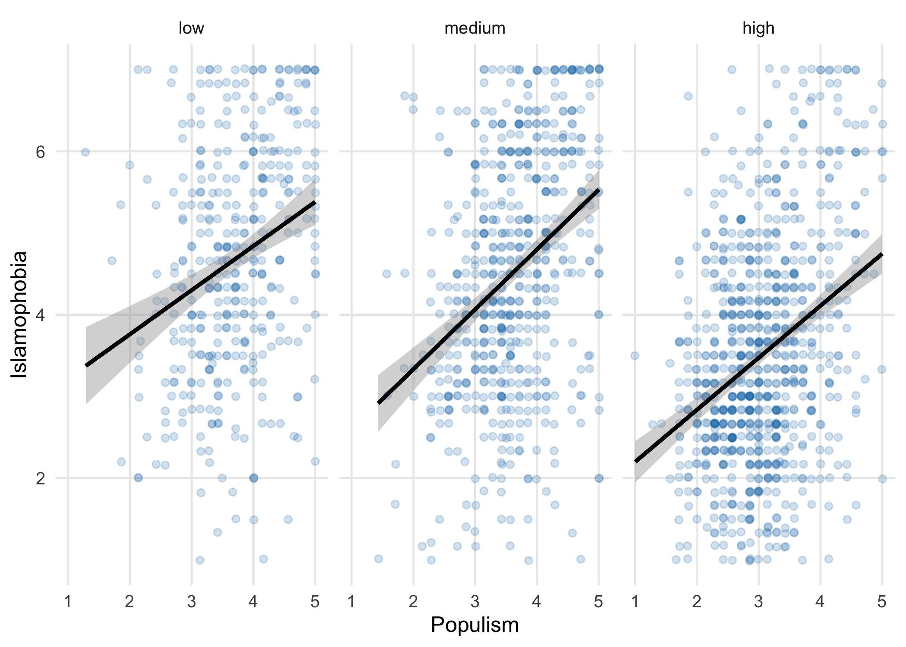
With two grouping variables, use facet_grid(), which arranges the panels in rows and columns:
allbus|>filter(!is.na(islamophobia), !is.na(populism),!is.na(educ_cat), !is.na(eastwest))|>ggplot(aes(x =populism, y =islamophobia))+geom_jitter(alpha =0.2, color ="#1f77b4")+geom_smooth(method ="lm", color ="black")+facet_grid(eastwest~educ_cat)+labs(x ="Populism", y ="Islamophobia")
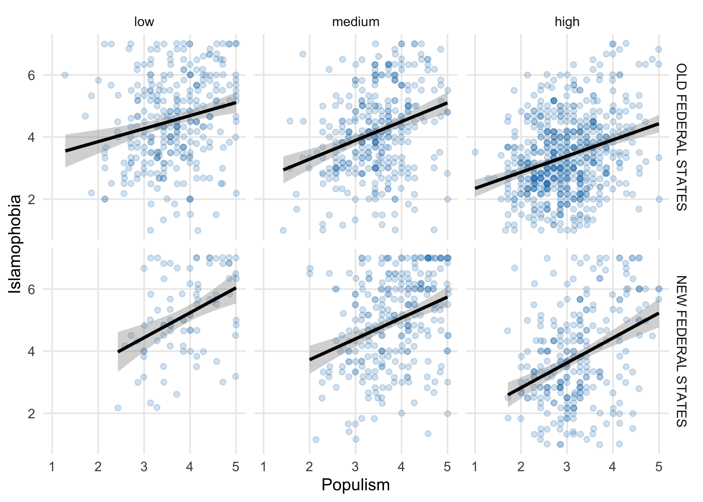
In publications, facets say more than tables of subgroup statistics. If you want to show in the discussion that a relationship is stronger in one subgroup than in another, facet_wrap() or facet_grid() makes this visible at a glance.
6.6 Colours and themes
6.6.1 Colour palettes with scale_color_*() and scale_fill_*()
The default colours of ggplot2 are not accessible. A small collection of standard solutions:
# Discrete categorical variables: Brewer palettesscale_color_brewer(palette ="Set1")# for lines/pointsscale_fill_brewer(palette ="Blues")# for areas# Continuous: viridis (accessible)scale_color_viridis_c()scale_fill_viridis_c()# Your own palettecolor_values<-c("#2563eb", "#16a34a", "#dc2626")scale_color_manual(values =color_values)
About 8% of men (and 0.5% of women) have some form of red-green colour vision deficiency. Default colour palettes often use red and green as the main contrast, so for readers with this deficiency the information disappears. Viridis (the default palette in matplotlib, now also in ggplot2) stays distinguishable for all forms of colour vision deficiency and is also readable when printed in black and white. As a rule of thumb, use viridis for continuous scales and a ColorBrewer palette for categorical variables (Set1, Set2, Blues, RdYlBu).
6.6.2 Themes with theme_*() and theme()
Complete themes replace the default appearance with a single line:
p<-allbus|>filter(!is.na(islamophobia), !is.na(educ_cat))|>ggplot(aes(x =educ_cat, y =islamophobia, fill =educ_cat))+geom_boxplot()+labs(x ="Education", y ="Islamophobia")+theme(legend.position ="none")p+theme_minimal()
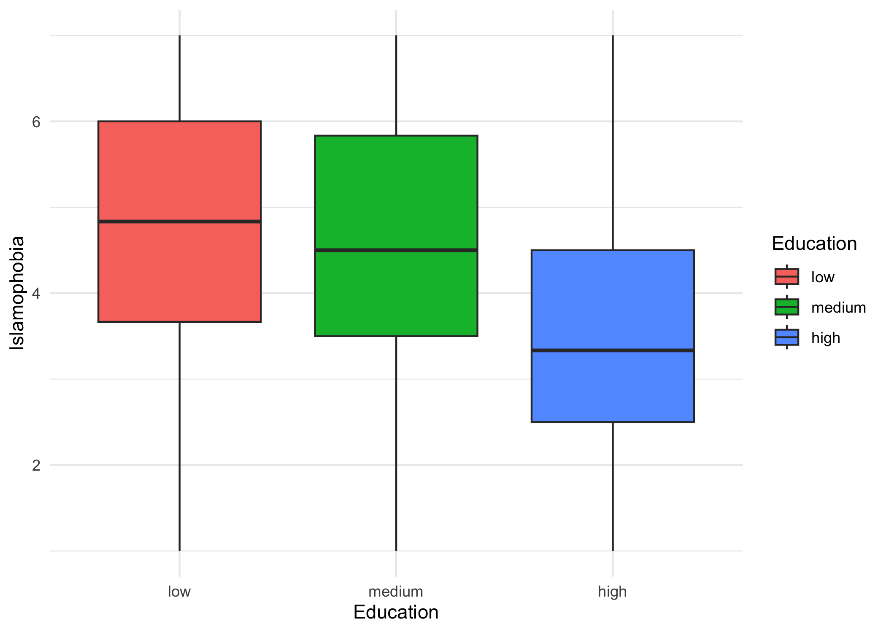
theme_bw(), theme_classic(), theme_dark() and theme_void() are further options.
The two function families theme_*() and theme() sound alike but do different things:
theme_minimal(), theme_bw(), theme_classic() …: complete themes. They set the overall style (background, grid, font sizes).
theme(legend.position = "none", …): adjusts individual elements. This function accepts dozens of elements (axis.text, plot.title, panel.grid …).
In practice you combine both: first a complete theme as the base, then individual adjustments with theme().
All plots in this book automatically use the theme theme_rworkshop(), which is defined in R/_common.R and set globally with theme_set(). This gives all plots in the Quarto project the same look without you having to specify the theme in every chunk. For your own project, you define a suitable theme once and load it with source("R/_common.R") in the setup chunk of each chapter.
Tip
SPSS → R: Clicking vs. code. In SPSS you click colours in a dialog box, and the next chart starts from scratch again. In ggplot2 you store the theme and the colour palette as code and can apply them to every new plot without repeating yourself.
6.7 Labels with labs() and to_label()
labs() sets all titles and labels of a plot in one function call:
allbus|>filter(!is.na(islamophobia), !is.na(populism))|>ggplot(aes(x =populism, y =islamophobia))+geom_jitter(alpha =0.2, color ="#1f77b4", width =0.05, height =0.05)+geom_smooth(method ="lm", color ="black")+labs( title ="Islamophobia and populism in Germany, 2023", subtitle ="Bivariate relationship, unweighted", x ="Populism (1–5, reverse-coded)", y ="Islamophobia (1–7)", caption ="Source: ALLBUS 2023, GESIS Leibniz Institute for the Social Sciences")
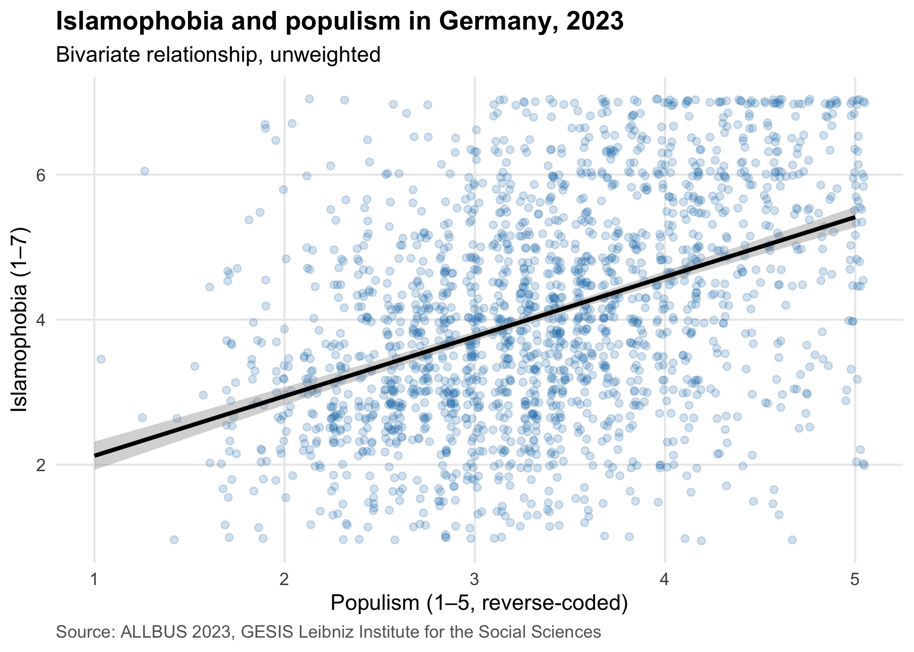
to_label() makes axes readable. For <haven_labelled> variables from SPSS, you usually want to see the value labels in the plot, not the numeric codes. The setup chunk of this chapter did exactly that: to_label(eastwest, sex) turned the two variables into factors:
allbus|>filter(!is.na(islamophobia))|>ggplot(aes(x =eastwest, y =islamophobia, fill =eastwest))+geom_boxplot()
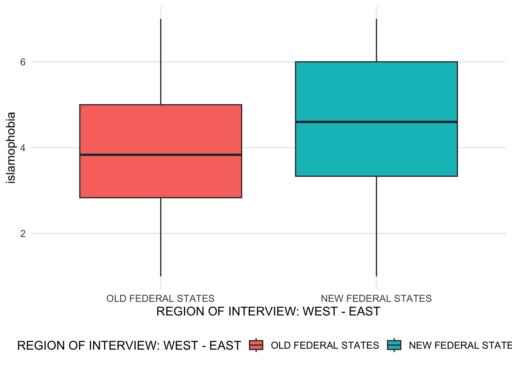
# The axis now shows 'OLD FEDERAL STATES' / 'NEW FEDERAL STATES'# instead of 1 / 2, because eastwest was converted with to_label() in the setup chunk.
If you need another labelled variable in a plot, apply to_label() in the pipeline before you call ggplot().
6.8 Outlook: saving plots with ggsave() and combining them
Two more tools that you will need in the next chapters:
Saving with ggsave(): you get a plot into your paper or onto your slides with ggsave("plot.png", width = 8, height = 5, dpi = 300). Section 9.9.3 covers this in full.
Combining several plots with patchwork: if you need two plots side by side or one above the other, combine them with p1 + p2 (side by side) or p1 / p2 (one above the other). Section 9.9.2 covers this in full.
Exercises
NoteExercise 1 · Your own distribution · Reproduction
Create a histogram of the populism scale (populism) with a binwidth of 0.25, weighted, with your own title and axis labels.
TipSolution
allbus|>filter(!is.na(populism))|>ggplot(aes(x =populism, weight =wghtpew))+geom_histogram(binwidth =0.25, fill ="#7c3aed", color ="white")+labs(x ="Populism (reverse-coded)", y ="Count (weighted)", title ="Distribution of populist attitudes", caption ="ALLBUS 2023")
NoteExercise 2 · Subgroup box plot with facets · Reproduction
Create a box plot of Islamophobia by eastwest, split by the education groups educ_cat (with facet_wrap).
TipSolution
allbus|>filter(!is.na(islamophobia), !is.na(eastwest), !is.na(educ_cat))|>ggplot(aes(x =eastwest, y =islamophobia, fill =eastwest))+geom_boxplot()+facet_wrap(~educ_cat)+labs(x =NULL, y ="Islamophobia")+theme(legend.position ="none")
NoteExercise 3 · Density plot with two groupings · Transfer
Create a density plot (geom_density) of Islamophobia, coloured by eastwest, and split it by educ_cat with facet_wrap. Where are the largest differences between East and West?
TipSolution
allbus|>filter(!is.na(islamophobia), !is.na(eastwest), !is.na(educ_cat))|>ggplot(aes(x =islamophobia, fill =eastwest))+geom_density(alpha =0.4)+facet_wrap(~educ_cat)+labs(x ="Islamophobia", y ="Density", fill =NULL, title ="Distributions by education and region")
NoteExercise 4 · Your own visualisation · Mini research question
Choose an interesting political or social science question from ALLBUS 2023 and visualise it. Examples: How is satisfaction with democracy (ps03) distributed? Is life satisfaction (ls01) related to age? Pay attention to a suitable geom type, weighting if your statement refers to Germany as a whole (weight = wghtpew), readable axes and an informative caption.
No model solution. Judge your plot by whether it answers a specific question in 10 seconds or less.
Note
Research journal: Where your mini study stands. You now know the vocabulary of visualisation: histogram, box plot, scatter plot, facets, themes. From the next chapter on, every statistical analysis comes with a matching plot. In Chapter 7 you then describe the scale (univariate and bivariate), illustrate it with a histogram and a box plot, and test the first hypotheses, weighted and with effect sizes.
What you know now
You build ggplot2 plots in three steps: data, aesthetic mapping, layers.
You choose suitable geom_* layers by data type (categorical/continuous, one/two variables).
You split the data into subgroups with facet_wrap() and facet_grid().
You use Brewer and viridis palettes for accessible colours.
You know theme_rworkshop() as the default theme of this book and can use it in your own projects.
You use to_label() to put readable labels on the axes.
In the following methods chapters you use these basics straight away: in Chapter 7 to visualise distributions and groups, in Chapter 9 for coefficient plots and combined plots.
Further reading
Hadley Wickham et al., ggplot2 Reference, the function reference with examples for every geom_* and scale_*.
R Graph Gallery, inspiration and a cookbook for thousands of chart types.
![Two parts, one above the other. At the top, under INSIDE aes(), the code ggplot(allbus, aes(x = age, fill = sex)) + geom_bar(). On the left the tower sex (fct) with MALE, MALE, FEMALE and an ellipsis; a green arrow with the mapping fill leads to seven bars for the ages 18 to 24. Each bar is stacked: a green segment for FEMALE at the bottom, a salmon-red one for MALE above it, and at 19, 21, 22 and 24 a narrow blue strip for NON-BINARY at the very bottom. On the right the legend fill with MALE in salmon red, FEMALE in green, NON-BINARY in blue and NA in grey. At the bottom, under OUTSIDE aes(), the code ggplot(allbus, aes(x = age)) + geom_bar(fill = “steelblue”). A purple brick “steelblue” leads with the arrow fill to the same seven bars, as high as above and all in steel blue; next to them the words no legend.](Bilder/figuren/en/k06-aes-konstante.svg)
![At the top the code ggplot(aes(x = educ_cat, weight = wghtpew)) + geom_bar(aes(y = after_stat(prop), group = 1), fill = “steelblue”). On the left a baseplate with the towers educ_cat (fct) and wghtpew (dbl+lbl), sorted by level: low twice with 1.20 and 1.20, medium twice with 1.25 and 0.545, high twice with 1.20 and 1.20, with an ellipsis after each level. Below the towers the mappings x and weight. A green arrow geom_bar() leads to a baseplate with the towers educ_cat, count and prop: low, 1049.6, 0.206; medium, 1524.7, 0.300; high, 2510.5, 0.494. The tower prop is outlined in green. An arrow leads to a bar chart with the mapping y = after_stat(prop) at the y-axis from 0% to 50% and x at the x-axis: three steel-blue bars for low, medium and high, about 21%, 30% and 49% high.](Bilder/figuren/en/k06-bar-zaehlt.svg)
![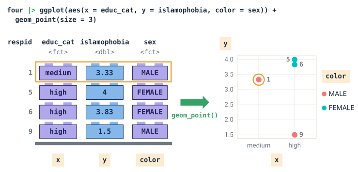 ggplot(aes(x = educ_cat, y = islamophobia, color = sex)) + geom_point(size = 3). On the left a baseplate with four rows and the towers respid, educ_cat (fct), islamophobia (dbl) and sex (fct): 1, medium, 3.33, MALE; 5, high, 4, FEMALE; 6, high, 3.83, FEMALE; 9, high, 1.5, MALE. The first row is outlined in orange. Below the towers are the mappings x, y and color. A green arrow geom_point() leads to a small plot with the x-axis medium and high, labelled x, and the y-axis from 1.5 to 4.0, labelled y. It contains four points with their respid: 1 at medium and 3.33 in salmon red, circled in orange; 5 and 6 at high and 4 and 3.83 in turquoise; 9 at high and 1.5 in salmon red. On the right the legend color with MALE in salmon red and FEMALE in turquoise.">](Bilder/figuren/en/k06-grammatik.svg){kind=link}
![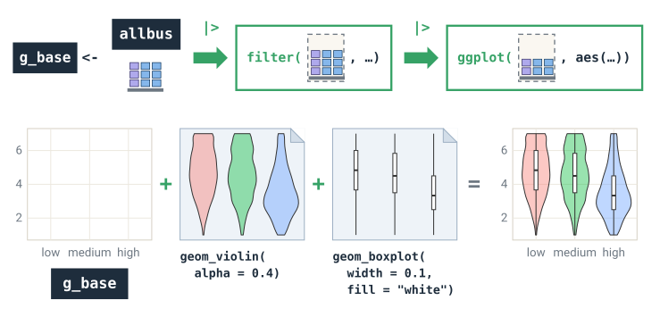 to the green box filter(, whose dashed first slot holds a small baseplate, followed by , …), another arrow with |> to the box ggplot( with a smaller baseplate in the first slot, followed by , aes(…)). Below that a row: an empty plot with the axes low, medium, high and 2, 4, 6, labelled g_base, plus a sheet with three violins in salmon red, green and blue, labelled geom_violin(alpha = 0.4), plus a sheet with three narrow white boxes, labelled geom_boxplot(width = 0.1, fill = “white”), equals the finished plot, in which the boxes lie over the violins.">](Bilder/figuren/en/k06-ebenen.svg){kind=link}